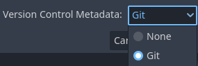

Version control systems
Introduction
Godot aims to be VCS-friendly and generate mostly readable and mergeable files.
Version control plugins
Godot also supports the use of version control systems in the editor itself. However, version control in the editor requires a plugin for the specific VCS you're using.
As of October 2025, there is only a Git plugin available, but the community may create additional VCS plugins.
Official Git plugin
Using Git from inside the editor is supported with an official plugin. You can find the latest releases on GitHub.
Documentation on how to use the Git plugin can be found on its wiki.
Files to exclude from VCS
Note
This lists files and folders that should be ignored from version control in Godot 4.1 and later.
The list of files of folders that should be ignored from version control in
Godot 3.x and Godot 4.0 is entirely different. This is important, as Godot
3.x and 4.0 may store sensitive credentials in export_presets.cfg (unlike Godot
4.1 and later).
If you are using Godot 3, check the 3.6 version of this documentation page
instead.
There are some files and folders Godot automatically creates when opening a project in the editor for the first time. To avoid bloating your version control repository with generated data, you should add them to your VCS ignore:
.godot/: This folder stores various project cache data.*.translation: These files are binary imported translations generated from CSV files.
You can make the Godot project manager generate version control metadata for you
automatically when creating a project. When choosing the Git option, this
creates .gitignore and .gitattributes files in the project root:

Creating version control metadata in the project manager's New Project dialog
In existing projects, select the Project menu at the top of the editor, then choose Version Control > Generate Version Control Metadata. This creates the same files as if the operation was performed in the project manager.
Working with Git on Windows
Most Git for Windows clients are configured with the core.autocrlf set to
true. This can lead to files unnecessarily being marked as modified by Git
due to their line endings being converted from LF to CRLF automatically.
It is better to set this option as:
git config --global core.autocrlf input
Creating version control metadata using the project manager or editor will
automatically enforce LF line endings using the .gitattributes file.
In this case, you don't need to change your Git configuration.
Git LFS
Git LFS (Large File Storage) is a Git extension that allows you to manage large files in your repository. It replaces large files with text pointers inside Git, while storing the file contents on a remote server. This is useful for managing large assets, such as textures, audio files, and 3D models, without bloating your Git repository.
Note
When using Git LFS you will want to ensure it is setup before you commit any files to your repository. If you have already committed files to your repository, you will need to remove them from the repository and re-add them after setting up Git LFS.
It is possible to use git lfs migrate to convert existing files in your repository, but this is more in-depth and
requires a good understanding of Git.
A common approach is setting up a new repository with Git LFS (and a proper .gitattributes), then
copying the files from the old repository to the new one. This way, you
can ensure that all files are tracked by LFS from the start.
To use Git LFS with Godot, you need to install the Git LFS extension and configure it to track the file types you want to manage. You can do this by running the following command in your terminal:
git lfs install
This will create a .gitattributes file in your repository that tells Git to
use LFS for the specified file types. You can add more file types by modifying
the .gitattributes file. For example, to track all GLB files, you can do this by
running the following command in your terminal:
git lfs track "*.glb"
When you add or modify files that are tracked by LFS, Git will automatically store them in LFS instead of the regular Git history. You can push and pull LFS files just like regular Git files, but keep in mind that LFS files are stored separately from the rest of your Git history. This means that you may need to install Git LFS on any machine that you clone the repository to in order to access the LFS files.
Below is an example .gitattributes file that you can use as a starting point for Git LFS.
These file types were chosen because they are commonly used, but you can modify the list to include any binary types you may have in your project.
# Normalize EOL for all files that Git considers text files.
* text=auto eol=lf
# Git LFS Tracking (Assets)
# 3D Models
*.fbx filter=lfs diff=lfs merge=lfs -text
*.gltf filter=lfs diff=lfs merge=lfs -text
*.glb filter=lfs diff=lfs merge=lfs -text
*.blend filter=lfs diff=lfs merge=lfs -text
*.obj filter=lfs diff=lfs merge=lfs -text
# Images
*.png filter=lfs diff=lfs merge=lfs -text
*.svg filter=lfs diff=lfs merge=lfs -text
*.jpg filter=lfs diff=lfs merge=lfs -text
*.jpeg filter=lfs diff=lfs merge=lfs -text
*.gif filter=lfs diff=lfs merge=lfs -text
*.tga filter=lfs diff=lfs merge=lfs -text
*.webp filter=lfs diff=lfs merge=lfs -text
*.exr filter=lfs diff=lfs merge=lfs -text
*.hdr filter=lfs diff=lfs merge=lfs -text
*.dds filter=lfs diff=lfs merge=lfs -text
# Audio
*.mp3 filter=lfs diff=lfs merge=lfs -text
*.wav filter=lfs diff=lfs merge=lfs -text
*.ogg filter=lfs diff=lfs merge=lfs -text
# Font & Icon
*.ttf filter=lfs diff=lfs merge=lfs -text
*.otf filter=lfs diff=lfs merge=lfs -text
*.ico filter=lfs diff=lfs merge=lfs -text
# Godot LFS Specific
*.scn filter=lfs diff=lfs merge=lfs -text
*.res filter=lfs diff=lfs merge=lfs -text
*.material filter=lfs diff=lfs merge=lfs -text
*.anim filter=lfs diff=lfs merge=lfs -text
*.mesh filter=lfs diff=lfs merge=lfs -text
*.lmbake filter=lfs diff=lfs merge=lfs -text
For more information on Git LFS, check the official documentation: https://git-lfs.github.com/ and https://docs.github.com/en/repositories/working-with-files/managing-large-files.